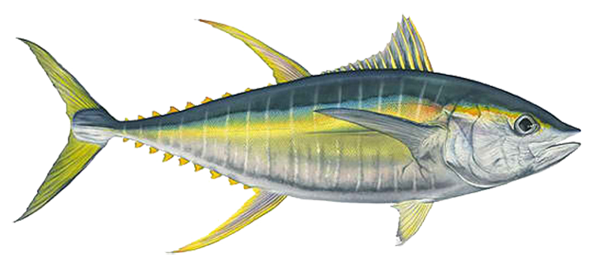

ALISEQ 
Contents:
ALISEQ, a program for analysing RNA-Seq data
Instalation and setup
Running the allele specific expression (ASE) pipeline
Running the read simulation pipeline
Workflow
Other stuff
Python modules
ALISEQ
Docs
»
Welcome to ALISEQ’s documentation!
View page source
Welcome to ALISEQ’s documentation!
¶
Contents:
ALISEQ, a program for analysing RNA-Seq data
Instalation and setup
Download the source code
Test if it’s working
Running the allele specific expression (ASE) pipeline
Edit the file targets.txt
Modifying workflow parameters
Running the workflow
Running the read simulation pipeline
Modifying simulation parameters
Running the workflow
Workflow
Other stuff
Python modules
simulate_reads.py
genewiseMAFC.py
maketable.py
convert2bed.py
read_buffalo_xml_data.py
evaluate_simulation.py
Indices and tables
¶
Index
Module Index
Search Page